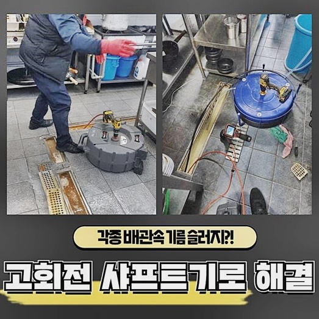
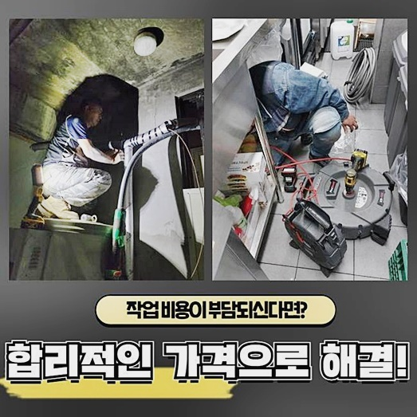
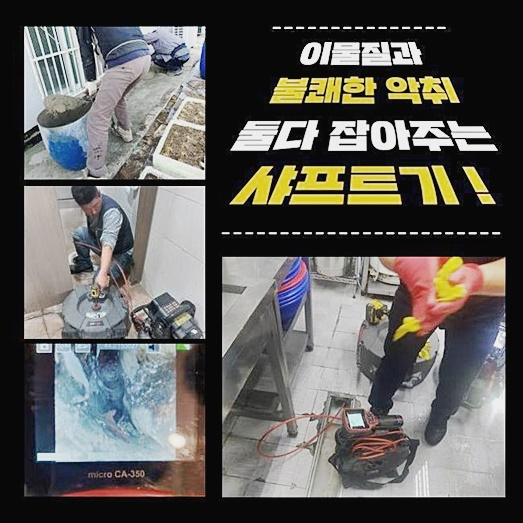
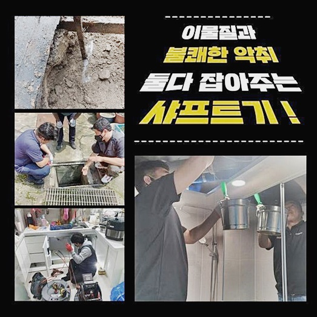
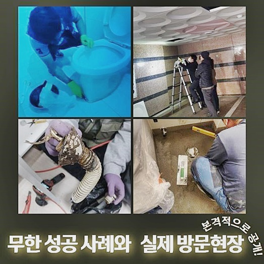

🏠 남촌동싱크대배수구역류 원동 배관내시경카메라 배관설비공사
용인 원동 싱크대막힘 전문 시공 후기

📋 작업 개요
- 위치: 용인 원동, 원동, 용인
- 서비스 유형: 싱크대막힘, 변기막힘, 하수구막힘, 배관막힘, 누수수리, 역류해결, 뚫는업체, 배관청소, 고압세척, 설비공사
- 작업 일시: 2025. 1. 12. 15:25
- 업체명: 하수구수사대 (010-5615-2118)
🔍 문제 상황
문원동변기역류 중앙동 배관뚫기 누수
안녕하십니까! 배관시설을 세척하는 설비업체에요!
배수구가 불현듯 막히게되면 필수적인 생활자체를 함에있어 피해가 발생되게됩니다
오늘은 1주일전 내방했었던 문제의 사례들을 통하여 막힘에 관하여 말씀드리고자하니 관련내용을 전혀 모르셔도 유용하게 쓰일거라 장담합니다!
내방드린데는 배수시설 장애의 장소였죠
세탁시설과 개별세대들이 상존하는 건물이었습니다
가정의 하수관로가 막힌탓에 당장 달려갔어요
해당 내용을 보고있는 고객분이 증세를 경험하시고 난감해지셨다면 전문경력이 뛰어난 업체들에게 연락하여 해결해볼것을 권하는 바입니다
배수관을 세척하는 과정들을 보신다면 고객님에게 불편을 시정해내고 빈틈없는 작업들을 수행할 것을 자신있게 말씀드리고 빠르게 달려갔죠
고객분은 급박하게 출동을 요청하셔서 바로 달려갔죠
급한 상황에서도 저희들은 곧장 찾아뵙고 여러분들을 돕고있어요
이번에 달려갔던 막혀버린 곳의 현장의 경우엔 1층이 운영되고 있던 셀프빨래시설로서 이부분도 배수시설 결함이 야기되었나 보는것이 우선과제였습니다
빨래점포는 배수관이 제 기능을 잃으면 영업자체를 하지 못하는 탓에 문제에 취약하죠

🔎 원인 분석
💡 전문가 진단: 정밀 진단 장비를 사용하여 슬러지의 고착 여부를 판명하고 타격/세척 작업을 실시했습니다.
비용을 최소화할 수 있으며 운영하는데에있어서 방해받지 않기위해 선제적으로 움직여보았죠
계신 곳에 도착 후 배수라인을 들여다보았더니 천장부분에 하수도가 자리한 상태였습니다
문제들의 근원이 어떻게 발생된건지 알아보고 하수배관의 세척으로 막히게된 부위를 깨끗히 세척해줄 요량이였습니다
현장으로 다다랐을땐 집 안쪽에서는 배수시설이 배수장애를 일으키던 내구성이였어요
트래펑을 가지고 혼자서 풀어가고자 했으나 진전이 없으셨대요
100도에 달하는 온수까지 흐르게했으나 의도치않게 역류하는 증세도 불거져 내구성이 심각하다고 전달하셨습니다
앞으로 바깥부분부터 선제적으로 청소과정을 이어가고 내부의 배수관으로 연결된 부위의 하수구 작업들을 이어갔죠
셀프빨래방의 경우 내측의 하수배관과 라인을 함께하여 생활이물이나 빨래과정에서 탈락된 잔여물이 쌓여버리면 배수장애를 일으킬수 있어요
때문에 증세가 발생되지 못하게 세척을 이어갔습니다
샤프트장치로 구석구석 세척해주었습니다
영업이 주된 목적인 빨래점포는 배수장애가 발생되면 불편이 상당하므로 정기적으로 점검들을 실시하는 것이 좋습니다
문제의 까닭들이 발견되지않은 채로 뚫는데에만 혈안이 되어있으면 더 큰 문제들이 야기될 수 있어요
가정의의 안으로 올라서 관찰해보니 욕실공간서 수돗물을 열어보니 주방쪽과 화장실쪽에서 역류증상이 목격되었고 막힌 상태였는데요

🔧 작업 과정
역류라 함은 하수관의 통로가 좁혀져서 사용된 물들을 받아들이지를 못한 이유로 솟구치거나 막혀버려서 증세에요
천정부에 하수로 중간에 오류들이 확인되어 청소를 추천드렸죠
보통 유수로가 증상의 전조를 떠올려보면 구조의 결함이 있을 수 있죠
그저 볼 때는 이상없어 보이기도 하나 점검 과정에서 기울기가 이상하거나 구조적 문제로 원인이 발생될 가능성이 커집니다
오늘 막힘증상의 장소에선 세척에 탁월한 스켈링을 위하여 위생적으로 비닐들을 사용하여 보양작업까지 마치고 수리를 이어갔습니다
반대로 증세가 중하지않다면 샤프트기기를 써서 시정이 가능한데요
그러나 외부까지 문제가 뻗어있다거나 심부쪽에 흡착물들이 잔존하거나 양상이 좋지못하는것과 같은 특이사항이 있다면 샤프트장비만을 써서 작업이 불가합니다
이럴때라면 고압의 청소를 통한 해결을 도출시켜야 합니다
샤프트장비의 경우 노커체인이 원 운동하는 것을 기반으로 해 고착물들을 없애주는 중요역할들을 도맡고있어요
타공위치를 확인하고 홀을 파내어 구멍으로 샤프트기기 케이블을 써서 이물질을 긁어내주었어요
이물제거 과정에서는 여러 잔해로 보여지는 오염물들이 발견되었고 세탁통 안에서 나오지 못한 이물들도 함께 배출되었죠
내시경장비로 관찰할 수 있는 내부적 모습에 관련되어 안내드릴게요
내시경장치의 비중은 반복적으로 강조드려 어렵지않게 많은 분들이 아시는 경우도 있어요
하수도를 직관적으로 확인하기위해선 내시경장치들을 가용해가며 보아야합니다
어떤 요소로 하수관을 막아서며 내시경장치로서 여러방면에서 증상을 파악하고 어떠한 방법들이 있어야하나 알수있는 것이죠
내시경장치로 심층부도 체크해보고 세척을 시도했습니다
내측과 외측을 왔다갔다하면서 세척과정을 꾸준히 밟아나가 깔끔히 원상복구했죠
집 안의 화장실과 싱크대안에도 물들을 담은 뒤 한꺼번에 쏟아내니 환골탈태하여 배수되었답니다
고객분도 하수들이 빠지는모습을 보시고는 안심이 된다 하시더라구요
문제가 많던 배수로를 우선 세척하고 수리를 마쳤어요


✅ 작업 완료
만에하나 이물이 많아 배수구 어딘가 꽉 막혔을 시엔 배수관에 좋지못한 영향들을 끼쳐서 누수문제가 발생될 확률이 높고 누수문제가 생긴다면 타 세대에 피해를 끼치는 일이 일어나므로 관리에 힘써주셔야 해요
지역적 한계없이 한시간을 넘기지않고서 방문이 실현되고 고객님께 결과들을 공개해드리고 고객분은 불안하지않게 시작하고 있으니 우려하는 일 없이 전화주실 때 재빨리 막힘을 해소시킬테니 걱정은 내려놓으시고 찾아주세요
그외에 문의사항이 있으시면 전화하신 뒤 질의주셔도 좋기에 전화하실때에는 환영하는 마음으로 고객분들을 도와드리겠습니다
문제의 현장에서의 전문적 해결이 필요할 때라면 염려는 내려두시고 저희께로 전화해주세요
심각해진 배수관 고장! 저희전문가와 해결하는건 어떠신가요?
빈틈없는 정책으로 여러분들을 맞이합니다!




⚠️ 베란다 누수 및 방수 관리 방법
- ✅ 비가 많이 올 때 창틀 주변이나 아래층 천장에 얼룩이 생기는지 정기적으로 확인해 보세요.
- ✅ 우수관 주변 실리콘 마감이 들뜨거나 깨진 틈새가 있는지 손상 여부를 수시로 체크하세요.
- ✅ 베란다 바닥 타일의 줄눈(메지)이 소실되면 그 틈으로 물이 침투하여 누수가 유발됩니다.
- ✅ 누수 의심 증상 발견 시 방치하면 아래층 손실이 커지므로 즉시 전문가의 진단을 받으십시오.
💡 핵심 정리
- 확실한 장비 작업(내시경 점검 및 샤프트 스케일링)으로 원인을 뿌리 뽑습니다.
- 작업 후 1년 이내에 동일한 부위 재발 시 100% 무상 A/S 서비스를 보장합니다.
- 서울 · 경기 · 인천 전 지역에 24시간 언제든 긴급 출동할 수 있도록 항시 대기 중입니다.
❓ 자주 묻는 질문 (FAQ)
🚨 용인 원동 싱크대막힘 문제로 고민이신가요?
정확한 원인 진단과 확실한 시공으로 재발 없는 해결을 약속드립니다.
24시간 긴급 출동 | 서울 · 경기 · 인천 전지역 | 1년 내 재발 시 무상 A/S